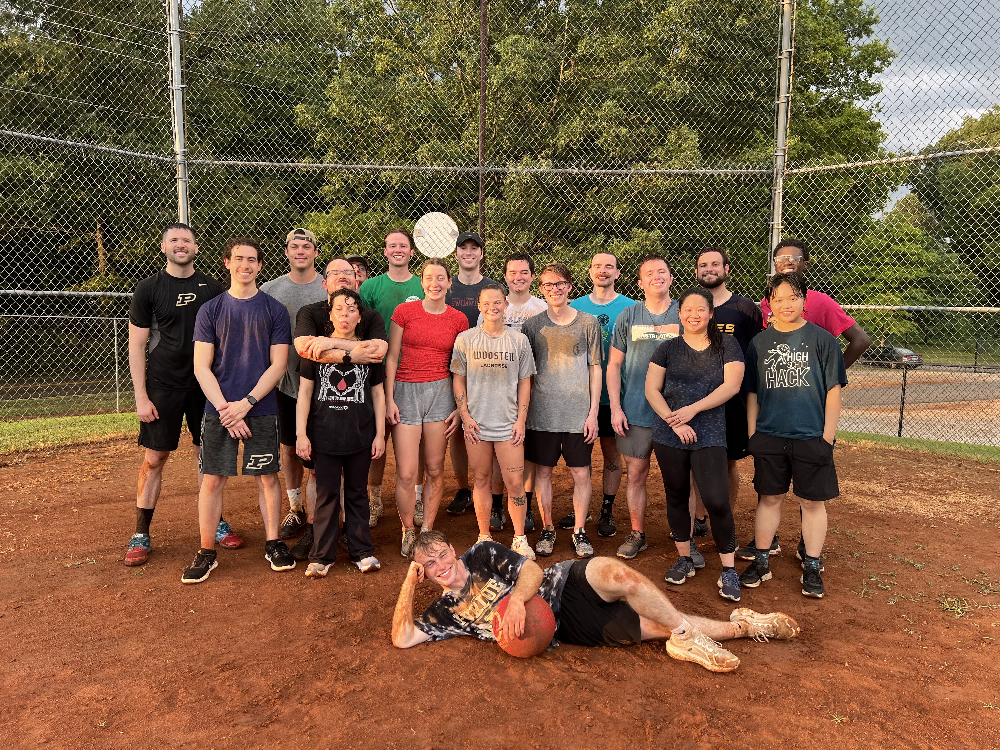

I arrived at Huntsville, Alabama on 5/26, but not even a week later I feel like my brain has grown threefold. In just five days, I moved from Massachusetts to Alabama, completed training, toured the facility, met dozens of new people, created a blog, researched persistent homology, learned the basics of GUDHI, and went to Walmart at least three times (like a true Arkansan).
For this summer, I'll be working with the Leidos Dynetics AI and Machine Learning Branch on a project exploring persistent homology methods and its applications in aerospace. As such, our mentor Mundy ensured we met a majority of the people in the team through multiple lunches and tours (of people--not of the facilities). Everyone I met was happy to make conversation about their projects and provide support for anything. The vibes were immaculate and the culture of Leidos Dynetics as a whole was welcoming.
While I believe I don't have the strongest coding background coming into this internship, I'm confident I'll leave with a deep understanding. This in-depth experience of working on a machine learning research project while supported by a strong community will push me to grow as a computer scientist, and I'm glad I have this opportunity to try new things at Leidos Dynetics!
I spent the majority of this week building foundational knowledge for my project. Like I said before, I don't have the strongest coding background coming into this internship, but I'm getting a lot of support to make sure I'm learning along the way. There were two main exercises I worked on: generating data that changes shape over time and training a classifier to identify circles when given data from persistence barcode plots. For the first of the two, I simulated points transforming from a circle to a square over a number of time steps and plotted the persistence barcode plots at each time step (see image below). For the latter, I wasn't able to completely finish the exercise this week, but I generated the data to train it on. The data consisted of 250 circles and non-circles (500 total), with varying amounts of noise. Some were mostly circular, some had randomized peaks sticking out of them, and some had a few points removed. Next week, I'll work on creating and training the classifier. Ideally by the end of these exercises, I'll be able to take my practice code and apply it to my project where I'll analyze the persistence of data that changes over time and train a classifier to identify patterns within that data.
Outside of work, Parker, Daniel and I went on quite a few side quests. We were given tasks and special events by Mundy, and as video game completionists, we couldn't possibly turn down the adventure. Our first side quest: Leidos drone testing. We didn't do much ourselves, but we got to take (many) photos with the drones and talk with the people conducting the tests about their backgrounds and experiences at Leidos. A couple days later, we went on our second side quest to tour the Leidos facilities, ranging from the electronics lab to the manufacturing building. Our last quest (and in my opinion, the most daunting) was pickleball. Mundy is a pretty big pickleball fan, and everyone keeps saying Daniel is a great pickleball player, so we had to play pickleball at least once during the internship. Unfortunately, I have a history of acquiring a bloody nose every time I play a sport involving a ball, so I was fully prepared to end the day with a tissue up a nostril. Somehow, though, my nose remained dry the entire time, and my hand-eye coordination might have even improved! Jokes aside, I had a great time and a constant smile throughout the game, so I'm looking forward to future pickleball events.
My progress this week was a little slower than the week before, but in my defense, I think I tackled one of my largest knowledge barriers coming into this project: coding a classifier. For the first couple weeks, I was generating and plotting data while learning persistent homology. The former topic wasn't too far off from my previous experiences--I've used matplotlib and numpy for a few projects in my classes, and these small exercises of generating and plotting data were a great way to strengthen my understanding. The latter topic was newer, but persistent homology itself felt very intuitive, at least at the level that I needed to understand it at. Classifiers, on the other hand, felt foreign. I knew what they did but never had to create one and never learned the foundations of how they work. Fortunately, the internet is a great place, and I was able to create a basic circle/non-circle classifier with PyTorch through the help of many articles. My understanding of classifiers still wasn't at the level I wanted it to be by the end of the mini project, but Mundy's weekly AI/ML "bootcamp" helped me greatly. He covered the history and math of classifiers with Parker, Daniel, and me, and he eventually plans to have us create a classifier (and other AI projects) in Excel to improve our understanding of the math behind AI.
While I knew I would be trying a lot of new things while working at Leidos, I wasn't expecting the learning to continue outside of the office--quite literally. Mundy invited the three of us to go on a foray to look for chanterelles, a type of edible mushroom, as well as other mushrooms. In the end, we didn't find many chanterelles, but we found and documented dozens of mushrooms on iNaturalist. Mundy also invited us to go to Puzzle Pint, a monthly puzzle event, after talking about our common interest in puzzles and hackathons. This activity was much more familiar to me, but it was a great experience nonetheless! We finished all the puzzles except the final metapuzzle, so we're planning to go back next month with the goal to finish everything.
The past three weeks have been jam packed with mini projects and activities, but this week was a little more relaxed because of Juneteenth. I spent the first few days familiarizing myself with Pandas and cleaning up the data I plan to use for my project. Unfortunately, the data isn't labeled with the examples I need to train the classifier, making this task a little more complicated. Instead of immediately working on the classifier, I've been working on clustering the persistence data into groups so an SME (subject matter expert) can label the data afterwards. I decided to use K-Means clustering as it's a rather common, general-purpose method, but I'm planning to spend some time next week trying other clustering methods and confirming that the groupings are correct. To visualize the 35-dimensional data points, I'm also going to experiment with dimensionality reduction methods like PCA (principal component analysis).
The last couple of days of the week were spent working on creating the pipeline for the classifier: formatting the data, processing it (persistent homology), training the classifier, then testing its accuracy. Since most of the office was out for the holiday on Thursday, it was a rather chill day working on something I'd already experimented a bit with (see Week 3 Recap above). We eventually left the office a couple hours early to spend time with the other interns at Lowe Mill. It's arguably one of the coolest places I've been to so far in Huntsville, with displays featuring dozens of artists, and it was great getting to bond with other interns outside of the office.
Like I mentioned in last week's post, I wanted to spend time this week visualizing and verifying the cluster labels and finishing up the pipeline. I used PCA (principal component analysis) to reduce the dimensionality of the points from about 35 dimensions to just 3, resulting in the graph shown below. While the clustering itself doesn't look incorrect, verifying their accuracy is a little bit more difficult. After talking with Mundy, we determined that the best way to verify the accuracy of the clustering is to verify the accuracy of the pipeline as a whole (parsing data, clustering by persistence barcode, then training a classifier on those labels). In other words, if the entire method is accurate, including the clustering, the resulting classifier should be able to match hand-labeled data. As such, I plan to save and hand-label a portion of my data for validation. By the end of the week, I finished up the majority of the code and was able to test its functionality by inputting a portion of my data. I plan to spend next week cleaning up the program and finding more data to train on (further explained in the next blog post).
While I made progress on my main project this week, I spent a good chunk of my time doing Mundy-specific intern responsibilities. I didn't mention it in previous posts, but Mundy has been hosting weekly Journal Club and AI Boot Camp assignments throughout the internship. This week, we were given three articles to read, all pertaining to information theory and its applications in different fields: "Organisms as a Special Kind of Information" by Mundy Reimer (our mentor), "Temperature as Joules per Bit" by Charles Alexandre Bédard et al., and "Simple Algorithmic Theory of Subjective Beauty, Novelty, Surprise, Interestingness, Attention, Curiosity, Creativity, Art, Science, Music, Jokes" by Jürgen Schmidhuber. Though I'm likely biased, I enjoyed Mundy's paper the most as it related information theory to biology, a topic I hadn't really touched since going to college. His post covers several concepts in an intuitive manner all while explaining how information theory could be related to the interactions and growth of biological systems.
For AI Boot Camp, our assignment for the week was to calculate the forward pass and backpropogation of a 3-layer MLP (multi-layer perceptron) by hand using Tom Yeh's "AI by Hand" Excel spreadsheet. When I first saw this series of words, I was entirely sure I would be watching 3Blue1Brown videos for hours just to even understand what the end goal was. After Mundy's lectures, though, I've learned that AI is just a lot of linear algebra and chain rule. Forward pass was a breeze--just a few MMULT (matrix product) and MAX cell functions in Excel. Calculating the backpropogation was a little more difficult. Filling in the spreadsheet with the proper functions was easy, but I wanted to understand the math behind the calculations in depth. By the end, I had calculated the partial derivative equations myself and even found a few typos in the workbook's equations.
To be completely honest, this week felt like a mental marathon. At the beginning of this internship, adjusting to the corporate lifestyle of working 8 to 5 with a 30-60 minute lunch was already an endurance test for my brain. College has spoiled me in that I only need to be in classes for at most 6 hours a day, if even that. I spend more time working on assignments later in the day, but I normally have a few hours in between to not think about classes while participating in clubs or working my part time job. I've adjusted to the 8 to 5 life by now, but July 4th threw our schedule for a loop. Parker, Daniel, and I wanted to drive back to Arkansas on Thursday to spend the holiday with our families, but we also wanted to get our full 40 hours in since interns are paid on an hourly basis (Note: for clarification, we were only expected to get 32 hours considering the holiday, but we decided to aim for 40). In the end, we condensed our work week and worked about 11 hours a day from Monday to Wednesday then left early on Thursday to make it back to Arkansas before midnight.
Even though my work week was condensed, the work content was normal. Another week meant another Tom Yeh "AI by Hand" exercise from Mundy. This week was CNN (convolutional neural network) where we did a forward pass of a small CNN in Excel. This exercise felt a little more straightforward considering we only had to do a forward pass, and I was able to watch a few 3Blue1Brown videos to get a good conceptual understanding of how CNNs work. I also spent time finding data to train my classifier on. Like I said before, the data I currently have is extensive but lacks labels, and it's a rather big annoyance we've been trying to deal with. The general goal of the project is to look at persistence barcode plots of data over time and to train a classifier to label the data at each time step as anomalous or standard. This would be rather simple if the data included labels for what time frames are abnormal. Instead, I spent a good portion of my time finding these "anomalous events" in my data from news articles online and labeling the data from times before and after the anomaly as "standard events." While I could label a lot of data by hand, the goal of clustering by persistence barcodes was to automate that separation. The classifier will be trained on the anomalous events that I'm finding online with the labels given by clustering. Once I've collected enough data and finished training the classifier with the clustered labels, hopefully it will align with my hand-labeled validation data.
Mundy was out for a family event across the country, so we had limited communication and my progress on the classifier started to slow down. Thankfully, he brought up a secondary project idea that we talked about towards the beginning of the internship but put aside for later. The idea is loosely based around how transformers can look at sequential data, understand relationships between different parts of the data, then produce an output sequence. In relation to my project, I could input a series of persistent homology barcode vectors in chronological order then train a transformer to identify the last vector in the sequence. There were components of the idea that were familiar-persistent homology, vectorizing barcode plots, parsing data from JSON files-but it was also different enough that I had a lot to learn. I spent a few days reading up on the math behind transformers and building one using PyTorch as an exercise.
While I still have much to learn about AI, I think my understanding of it has grown tenfold since coming here. The media tends to portray AI as a mysterious black box method that can solve the world's problems given enough time. In reality, a lot of common AI operations (e.g. applying weights, activating outputs, backpropogation) can be broken down into linear algebra, max functions, and a touch of chain rule. I enjoy being able to visualize MLPs, CNNs, and transformers as simple math equations instead of taking for granted that AI "just works."
Outside of work, we had to face the biggest challenge of our internship: the interns vs mentors kickball game. I'm quite terrible at kickball. Like I mentioned when talking about pickleball, I cannot figure out hand-eye coordination to save my life. My reflexes are even worse. I'm almost sure the people who could catch purposefully stayed near me when I was in the outfield to cover for me. Whether expected or not, us interns got absolutely destroyed. At some point, we just stopped counting because the point gap was so large. Despite the mentors' undeniable victory, I fully enjoyed playing kickball. It rained midway through, so we were all muddy and soaked by the end of the game, creating one of the greatest group photos of all time.
